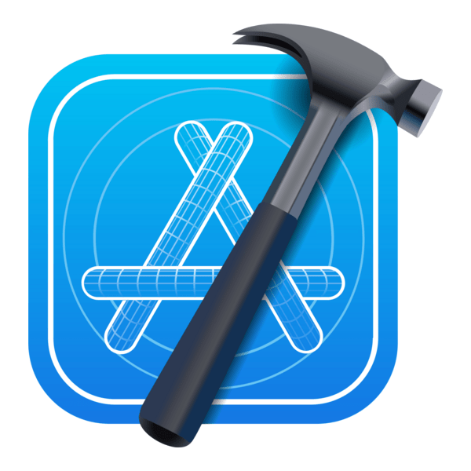

Frameworks de desarrollo para aplicaciones móviles
Introducción
Además de los lenguajes de programación, un aspecto clave en el desarrollo de aplicaciones móviles es el uso de frameworks. Estos proporcionan estructuras, librerías y utilidades que simplifican la creación de apps, fomentan buenas prácticas y aceleran el ciclo de desarrollo.
En este apartado veremos los frameworks más importantes vinculados a Kotlin (Android) y Swift (iOS), entendiendo su papel en el día a día de los desarrolladores y sus aportaciones al ecosistema.
Frameworks en Kotlin (Android)
Android Jetpack
Android Jetpack no es un framework único, sino un conjunto de librerías, herramientas y guías de arquitectura desarrolladas por Google. Incluye componentes como Room (persistencia de datos), ViewModel y LiveData (gestión del ciclo de vida y datos reactivos) o Navigation (manejo de rutas). Jetpack promueve el desarrollo basado en principios modernos como la separación de responsabilidades y la escalabilidad.
Kotlin Coroutines
El soporte de Kotlin Coroutines permite gestionar operaciones asíncronas y concurrentes de manera más sencilla y expresiva que con threads tradicionales. Gracias a las corutinas, los desarrolladores pueden trabajar con llamadas a red, acceso a bases de datos o tareas en segundo plano sin complicar el código con callbacks.
Ktor
Ktor es un framework creado por JetBrains para desarrollar aplicaciones cliente-servidor en Kotlin. En el ámbito móvil es especialmente útil para la comunicación con APIs REST o WebSocket, permitiendo a los desarrolladores de Android (y multiplataforma) trabajar con redes de forma segura y modular.
Jetpack Compose
Jetpack Compose es el framework declarativo moderno de Android para construir interfaces gráficas en Kotlin. Inspirado en paradigmas como React y SwiftUI, Compose simplifica la creación de UIs reactivas, eliminando gran parte de la complejidad del manejo de Views tradicionales.
Frameworks en Swift (iOS)
UIKit
UIKit ha sido durante más de una década el framework central para el desarrollo de interfaces en iOS. Proporciona todos los componentes básicos de la interfaz gráfica (botones, vistas, controles de navegación) y maneja aspectos fundamentales como gestos táctiles, animaciones o gestión del ciclo de vida de las vistas.
SwiftUI
Presentado en 2019, SwiftUI representa el salto hacia un modelo declarativo en el desarrollo de interfaces. Permite construir pantallas con código conciso y reactivo, donde la UI se actualiza automáticamente al cambiar el estado de los datos. SwiftUI se integra con Combine para manejar programación reactiva y es considerado el futuro del desarrollo en plataformas Apple.
Combine
Combine es un framework para programación reactiva introducido en iOS 13. Ofrece una manera unificada de manejar eventos asincrónicos, como actualizaciones de red, entradas del usuario o cambios en la base de datos. Aunque se usa frecuentemente junto a SwiftUI, también puede integrarse con UIKit, ofreciendo más control sobre flujos de datos complejos.
Core Data
Core Data es el framework de persistencia nativo de Apple. Permite modelar datos de alto nivel y almacenarlos de forma eficiente, integrándose perfectamente con Swift y SwiftUI. Aunque tiene cierta curva de aprendizaje, es la solución más adoptada para la gestión local de datos en apps iOS.
Entornos de desarrollo integrados (IDEs) para Kotlin y Swift
Introducción
El IDE (Integrated Development Environment) es la herramienta central de todo desarrollador. Un buen IDE no solo ofrece un editor de código, sino también depuración, simuladores, pruebas automatizadas, gestión de dependencias y despliegue en dispositivos.
Veamos cuáles son los entornos más utilizados al programar con Kotlin y Swift, y por qué son fundamentales en el día a día del desarrollo móvil.
IDEs para Kotlin (Android)
Android Studio
Android Studio es el IDE oficial para el desarrollo en Android. Basado en IntelliJ IDEA, incluye soporte completo para Kotlin desde 2017. Sus principales características son:
- Integración con Android SDK y herramientas de compilación.
- Soporte de Jetpack Compose para crear interfaces modernas de forma declarativa.
- Simuladores de dispositivos para pruebas sin necesidad de hardware físico.
- Potente depurador, analizador de rendimiento y herramientas de profiling.
- Integración con Git y servicios en la nube de Google.
En la práctica, es la opción más usada por los desarrolladores Android, tanto principiantes como profesionales.
IntelliJ IDEA
Aunque Android Studio está basado en él, IntelliJ IDEA es el IDE insignia de JetBrains y ofrece un entorno más generalista para Kotlin, ideal si se trabaja en proyectos multiplataforma (Android + backend en Ktor, por ejemplo). Es especialmente valorado por sus herramientas de refactorización y productividad.
IDEs para Swift (iOS)
Xcode
Xcode es el IDE oficial de Apple y la opción dominante para programar en Swift. Incluye:
- Simuladores de todos los dispositivos Apple (iPhone, iPad, Apple Watch, Apple TV, Mac).
- Herramientas visuales para diseñar interfaces con Storyboard o con SwiftUI Preview.
- Depurador integrado, pruebas unitarias y de interfaz, análisis de rendimiento.
- Integración directa con la App Store para distribuir aplicaciones.
En el ecosistema Apple, Xcode es prácticamente obligatorio, ya que es el único IDE que permite compilar y desplegar apps en dispositivos iOS de forma oficial.
AppCode
AppCode, desarrollado por JetBrains, es una alternativa a Xcode que se integra con el ecosistema de JetBrains. Ofrece:
- Soporte avanzado de refactorización y navegación en proyectos grandes.
- Integración con Swift, Objective-C y C++.
- Compatibilidad con las herramientas de Apple (usa Xcode por debajo para la compilación).
Aunque es menos utilizado que Xcode, algunos equipos lo prefieren por las ventajas de productividad típicas de JetBrains.

XCode